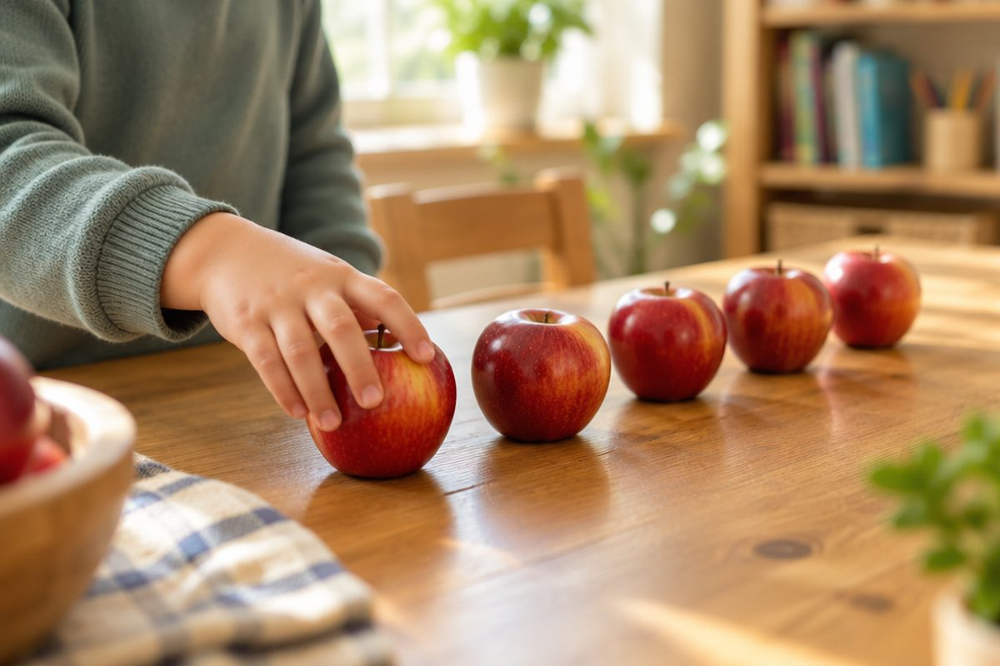

전체 단원 › 1학년 1학기 › 수학 › 9까지의 수
하나, 둘, 셋! 9까지 셀 수 있을까?

사과가 몇 개일까요? 손가락으로 하나씩 짚으며 세어 봐요. 오늘은 9까지 세는 법을 배워요.
하나씩 짚으며 세어요
물건을 하나씩 짚어요.
짚을 때마다 수를 하나씩 말해요.
마지막에 말한 수가 전체 개수예요.
→ 하나, 둘, 셋 → 3개
수는 두 가지로 읽어요
1은 '하나' 또는 '일'이라고 읽어요.
개수를 셀 때는 하나, 둘, 셋으로 읽어요.
아무것도 없으면 0(영)이에요.
1 하나·일, 2 둘·이, 3 셋·삼, 4 넷·사, 5 다섯·오, 6 여섯·육, 7 일곱·칠, 8 여덟·팔, 9 아홉·구
몇째인지 말해요
줄을 선 차례는 '째'를 붙여 말해요.
첫째, 둘째, 셋째, 넷째, 다섯째……
어느 쪽부터 세는지 꼭 봐요.
→ 왼쪽부터 첫째 , 둘째 , 셋째
이렇게 풀어요: 1 큰 수, 1 작은 수
수를 순서대로 써 봐요.
바로 뒤의 수가 1 큰 수예요.
바로 앞의 수가 1 작은 수예요.
① 4, 5, 6을 써요. ② 5 바로 뒤는 6 → 5보다 1 큰 수는 6 ③ 5 바로 앞은 4 → 5보다 1 작은 수는 4
핵심 낱말
- 세기
- 물건이 몇 개인지 하나씩 수를 말하는 것
- 0(영)
- 아무것도 없을 때 쓰는 수
- 몇째
- 줄을 선 차례를 말하는 말(첫째, 둘째……)
- 1 큰 수
- 순서대로 셀 때 바로 뒤에 오는 수
- 1 작은 수
- 순서대로 셀 때 바로 앞에 오는 수
한 줄 정리
- 물건을 하나씩 짚으며 세고, 마지막 수가 개수예요.
- 수는 '하나·일'처럼 두 가지로 읽고, 아무것도 없으면 0이에요.
- 바로 뒤의 수는 1 큰 수, 바로 앞의 수는 1 작은 수예요.
학교 교육과정 연결
- [2수01-01] 수의 필요성을 인식하면서 0과 100까지의 수 개념을 이해하고, 수를 세고 읽고 쓸 수 있다.